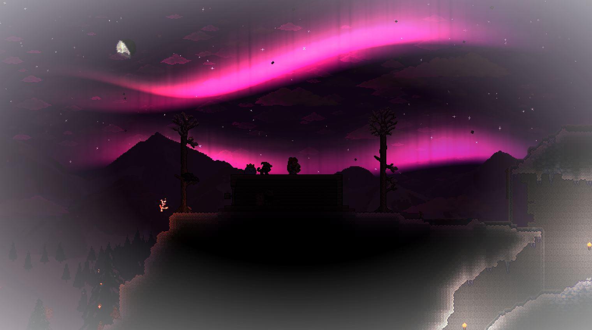
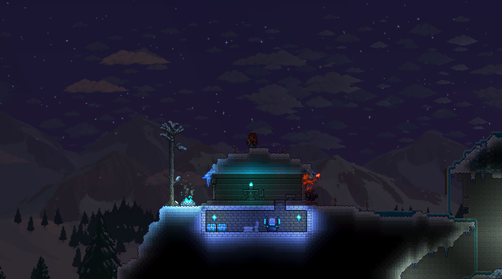
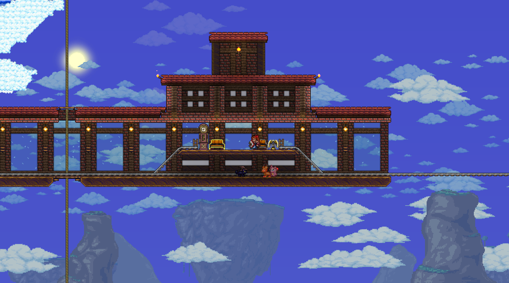
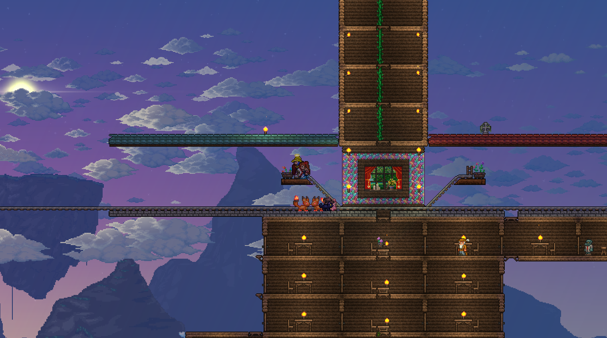
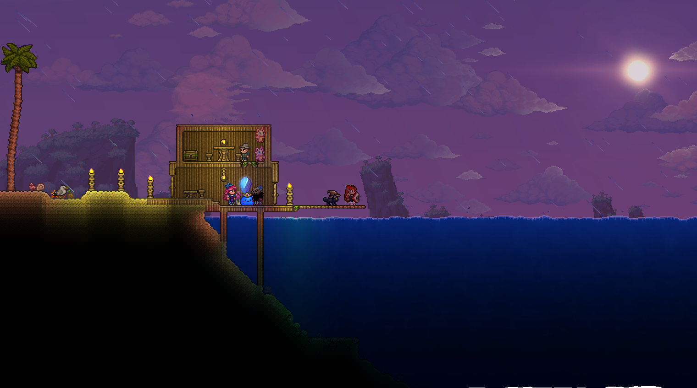
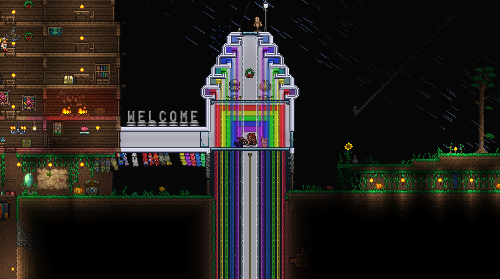

With the bosses dealt with there was still a little more groundwork to cover. A great deal of time was spent by Kristian setting up bases for NPCS in order to set up pylons.
Rose spent a lot of time building train stations which look gorgeous (pics below).
Also while exploring I noticed that in the winter biome they now have Aurora?! Which was breathtakingly beautiful to witness. Unfortunately I didn't get a picture of it in time while we were all there admiring the view.
But I did get a shot of the Blood Moon aurora which still looks pretty neat.






So all things considered, a pretty eventful and productive week of Terraria. We finished off our end of week session with a search for the aether.
(Kristian basically held me hostage so he could search for it.)
Luckily he finally found it and we made a few of the permanent upgrades from the shimmer there. ...we still need to do it for everybody else though.
The music and background you're seeing and listening to are from the aether biome btw.
Anyway that's all there is to report. See you next week!